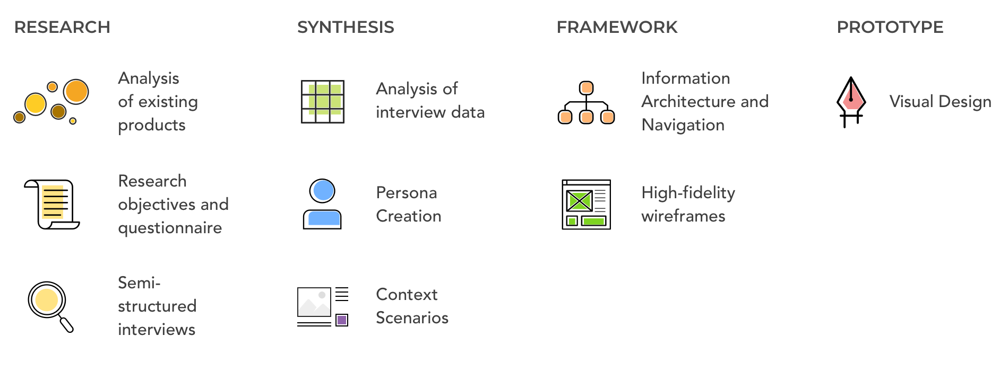
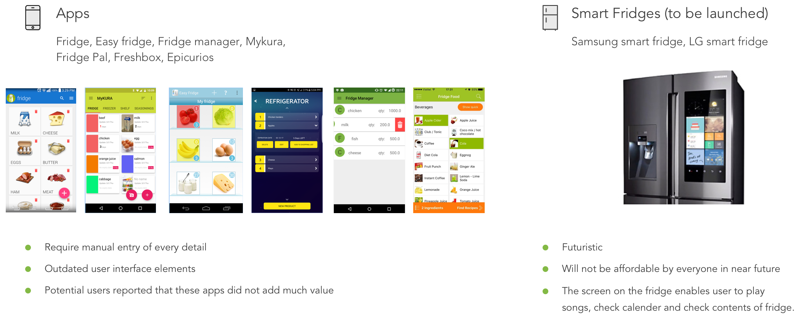
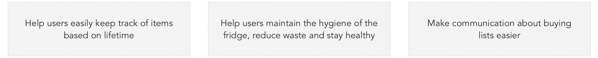
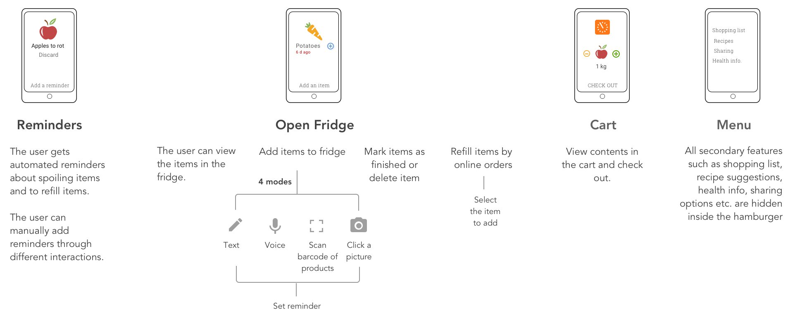

Fridzy - Designing a fridge tracking application
This project was inspired by difficulties I faced while trying to track/manage contents of the fridge and trying to colloborate with my flatmates during my stay in New Delhi for a year. Hence, the research and designs are meaningful for current Indian or similar settings.

- Timeline: 2 days
- Methodology: Lean UX
BACKGROUND
When multiple people share the same fridge like in a bachelor's flat, it is not easy to keep track of the items or their quantity. In nuclear families, the husband has to check with his wife to know what to buy. It is also necessary for users to keep checking if any items is going stale. Hence, I wanted to harness mobile technology to help users with easy management and colloboration and reduce the waste generated. I also wanted to encourage users to suitable and healthy eating habits.
EXISTING PRODUCTS
Mobile applications and Smart fridges are the two popular technologies which enable tracking of food items inside the fridge. Hence, I explored and analysed the highest rated fridge tracking applications on Playstore and Appstore. Samsung and LG have started to sell smart refridgerators in the market but due to high costs, they aren't popular in developing countries. Users arent willing to spend thousands of dollars extra for just a tablet attached to the fridge.

AIM
Hence, I wanted to create a mobile application that can be used today by bachelors sharing an apartment, housewives and other elders of the family.

USER INTERVIEWS
I conducted semi-structured interviews with 4 potential users who fell broadly into 3 different user profiles. The aim of the interviews was to understand the problems participants face with managing the fridge, current ways of keeping track of items and colloborating/communicating and their needs. The participants were encouraged to restrospect into problems they faced in the past for a rich collection of data.
Sample size: 4
Mode: In-person and Telephonic interviews
Duration of interview: 35 mins
The above mentioned verbatims were crucial for forming design decisions.
Analysis of data
Analysis data from the interviews transformed into opportunities and design decisions.
CONCEPT AND FLOW
I sketched out concepts on paper and made concrete task flows. The application's 3 primary features are put into 3 verticals with secondary features hidden inside the hamburger.

WIREFRAMING
High fidelity wireframes were made. The description of features and certain visual elements is shown below -

EVALUATION AND REFLECTIONS
Based on a short evalaution of the screens with the same interview participants, I made changes changes in the interface. However, this application requires onboarding and tooltips due to the presence of unusual micro-interactions.
With the increasing popularity of home assistants like Alexa in the US, this application can take input from these devices. The biggest challenge for this project is automation and minimizing manual entry.